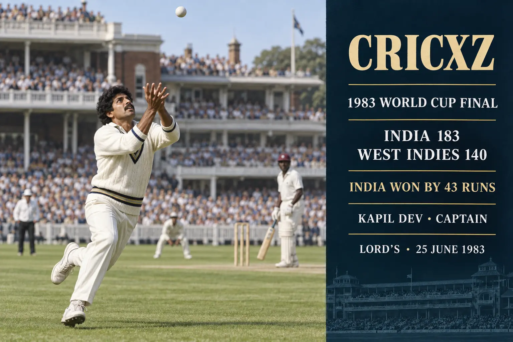

Test Batting
- Matches
- 131
- Innings
- 184
- Not outs
- 15
- Runs
- 5,248
- Highest score
- 163
- Batting average
- 31.05
- Hundreds
- 8
- Fifties
- 27

Kapil Dev took 434 Test wickets and scored 5,248 Test runs during an international career spanning from 1978 to 1994. In 1983, he captained India to its first men's Cricket World Cup title.
Career statistics are final.
Kapil Dev played his final international match in October 1994. The figures above were verified against ICC career records and ESPNcricinfo's statistical profile.
Kapil Dev was a genuine match-winning all-rounder. He remains the only cricketer to combine more than 5,000 Test runs with over 400 Test wickets, while his aggressive lower-order batting added a new dimension to India's international cricket.

India defended 183 against the two-time defending champions West Indies at Lord's on 25 June 1983. Captain Kapil Dev completed a memorable running catch to dismiss Viv Richards, and India won by 43 runs to claim its first men's World Cup title.
Earlier in the 1983 tournament, India had fallen to 17 for five against Zimbabwe at Tunbridge Wells. Kapil Dev responded with an unbeaten 175 from 138 balls, then the highest individual score in ODI cricket, to lead India to a crucial victory.
16 October 1978 – 19 March 1994
Debuted against Pakistan in Faisalabad and made his final Test appearance against New Zealand in Hamilton.
1 October 1978 – 17 October 1994
Debuted against Pakistan in Quetta and played his final ODI against West Indies in Faridabad.
1978–1994
Represented India in 356 international matches and captained the country to its breakthrough 1983 World Cup triumph.
Retired as Test cricket's leading wicket-taker, having taken 434 wickets in 131 matches.
Scored eight hundreds and 27 fifties as an attacking middle-order batter.
Produced a historic unbeaten innings against Zimbabwe after India slipped to 17 for five.
Led India to a 43-run victory over West Indies in the final at Lord's.
Remains the only player with more than 5,000 Test runs and 400 Test wickets.
Was inducted into the ICC Cricket Hall of Fame for his exceptional all-round career.
Received India's national sporting honour early in his international career.
Received India's fourth-highest civilian award.
Was named among Wisden's five cricketers of the year.
Received India's third-highest civilian award.
Was chosen by Wisden as India's leading cricketer of the 20th century.
Received the BCCI's lifetime achievement honour for his contribution to Indian cricket.
Read MS Dhoni's career stats and captaincy records, explore Sachin Tendulkar's international records, or browse all CricXZ player profiles.